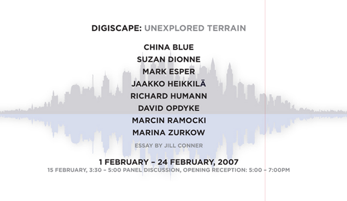

Pace Digital Gallery is pleased to present Digiscape: Unexplored Terrain guest-curated by China Blue. catalogue available, designed by Edward M. McKirdy. download catalogue as pdf "...the artists clearly convey that the significance of networks, both social and technical, now are central to the production and dissemination of contemporary art," ~ Jill Conner, from the catalogue essay.